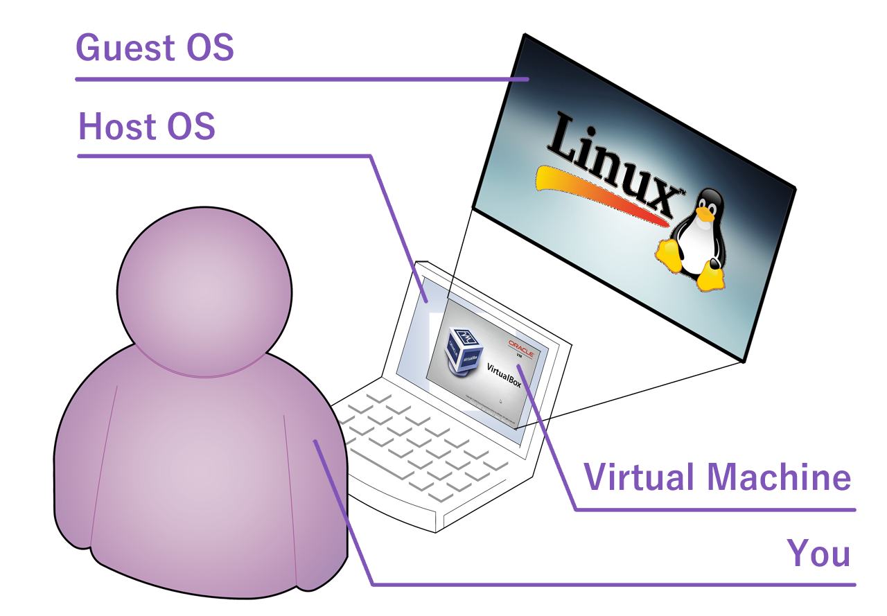
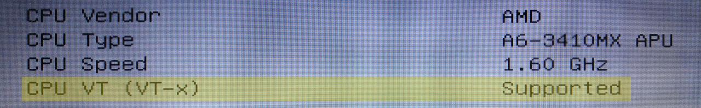
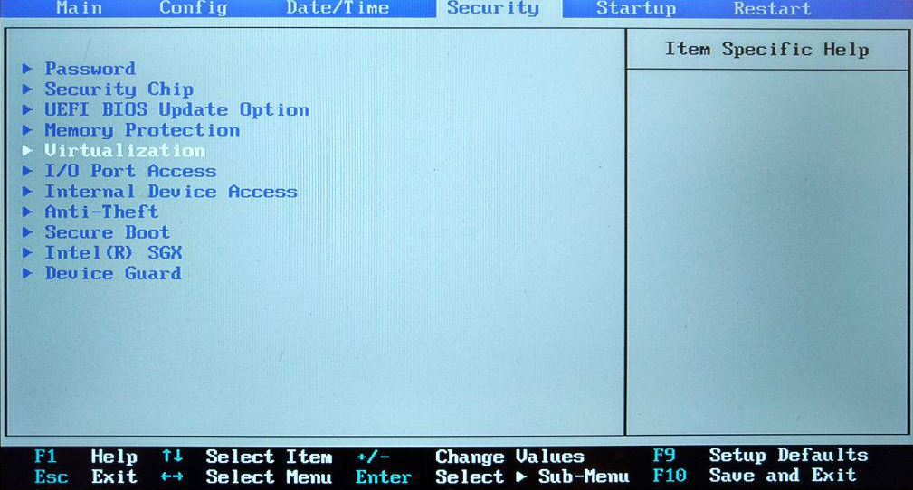

Here you are briefed on why and how - and most importantly, shown how to configure two important BIOS settings to make it all work.
What is this virtual machine stuff?
A virtual machine (VM) is just a software that emulates hardware - for example, an intel hardware or maybe an Arm based system. But alone it is not all that useful and they are commonly bundled with another kind of software that interfaces and manages resources for the VMs, called a hypervisor. You can use these terms interchangeably, but we try to use term 'hypervisor' when we talk about the software bundle and 'virtual machine' when we talk about the emulated hardware or the operating system inside it.
As already mentioned above, just like your PC can run your operating system, by allocating some of your CPU power, memory and disk space to a virtual machine, a hypervisor can run another operating system inside your operating system. A computer inside a computer, if you will. Your operating system is called the host OS and all the operating systems running inside virtual machines are called guest OS'es. (And this is as much special vocabulary as this topic requires...)
Okay, but why?
For more reasons than we can explain here, without you just leaving this page, but couple of the most important reasons in our case are:
- Everyone can have exactly the same kind of computing environment. Most importantly for you, it is exactly the same environment the teacher uses - things will work, and if for some reason not, its not your fault.
- VM can be installed with required software and copied to everyone - instead of everyone trying to install the software into all sorts of personal computers, operating systems and configurations.
- If something gets messed up too badly, you can simply download a new copy or rollback to last working savepoint (called a snapshot - we lied, this term is also used in addition to the ones above).
- You can ditch all that with a click of a mouse when the course is done and you no longer want to use or have those programs.
We think this is a brilliant idea!
I still have guestions
How does this benefit me?
In more ways that one!
As listed above, you no longer need to spend time and trouble yourself with the installation and configuration of the programs needed by the course you attend to. Instead, you can download a virtual machine image, import (usually with just a double-click) and enjoy ready made environment with all the necessary software, properly configured and ready to be used.
Most of the hypervisors we support also feature snapshots, a kind of savepoint where you can return, in case you accidentally break something badly enough. Downside is that you need to tell the hypervisor when you want to take a snapshot and when you rollback to one, anything that was created after taking the snapshot, will disappear. However, most provided virtual machines should store your files into a cloud to prevent any loss, but you should check to make sure.
You might also appreciate the convenience of getting rid of course specific software, which is as simple as deleting the virtual machine from your hypervisor. Boof, all gone and every bit of diskspace returned to you. No lingering log files, system configuration keys or other artefacts lying around. And if you thought the course was very interesting, you can export the virtual machine yourself to store it for later or move it to another PC.
Do I need a virtual machine?
Yes most likely, since you are here... Odds are that the Moodle page for your course instructed you to come here and get one.
However, depending on your teacher, you may have options. There may be an USB drive image available, which allows you to boot your PC into the operating system, after you have written the image into an USB disk. Some teachers may provide a list of software that you need to install into your own operating system, if you do not want to install a hypervisor and run the provided virtual machine.
We merely provide a service to create and distribute these things to help both students and teachers. What is required and what is possible, are things that your teacher decides. Thus, the real answer to this question should be found in your course's Moodle page - and if not, please approach your teacher to inquire.
Are there security or privacy risks?
There are no additional security risks or privacy concerns.
In fact, networkwise there are less risks than without using virtual machines. Default configuration places all virtual machines behind a NAT which protects your virtual machine from most common attempts to brek in, and if an intruder somehow did manage to break into a virtual machine, all he can find there are course related files - all your personal items are in your host OS.
Your privacy is also well protected because no additional details about you are used or stored anywhere. Most VM images will ask you for your name and email in order to configure Git for you, but those details are not secret to begin with. They can be found elsewhere much easier than trying to break into your virtual machine.
The image you download and use is also exclusively your own and just like any other file in your personal computer, no one can access them. If you still have questions about privacy or security, please let us know - it will help us develop these pages to answer all possible questions.
Does that picture mean that I will have to use Linux?
Well, yes... but we have done a lot of work in order to make the userinterface easy and simple. We are not going to let confusing Linux desktop manager take away the gains for which we worked so hard to reach. All of this is supposed to be easy for you to use.
Primary reason why you will see mostly Linux operating systems in the provided virtual machines is simply because of licensing. We cannot distribute licensed operating systems and unfortunately, you are not allowed to use one, even if you already run one in your personal computer - all companies require users to purchase separate licenses for their virtual machines.
While this is being written, there are no exceptions to this rule, but if some course manages to overcome this licensing issue, nothing in our solution prevents teachers from distributing whatever operating system they are able to.
Can I remove all this after my course?
Absolutely! You can reinstall and remove between every course that uses virtual machines. A hypervisor does not consume much disk space without any virtual machines and it consumer no memory and no CPU power when not running - meaning that you could just leave it there until you need it again. But if rather not, you can delete the virtual machine(s) and remove the hypervisor easily.
Where can I learn more?
Awww, you're just saying so to make us feel good... But in case you really mean it, there are a few links that we can recommend:
- Virtual machines for beginners at How-To Geek
- Virtualization page at Wikipedia
- Introduction to Virtual Machines by IBM
BIOS Settings
To enter BIOS you need to restart your PC and press the appropriate key (usually ESC, DEL, F1, F2 or F10) during the start-up, before your operating system begins to load.
In Windows 10, you can also access BIOS by pressing the shift key while selecting restart from the start menu. During the restart, a menu opens. Choose the options Troubleshoot > Advanced options > UEFI Firmware settings > Reboot.
Enabling virtualization
All virtual machines run inside a program called hypervisor, which rely on a virtualization feature in your processor. Unfortunately this is not enabled by default.
Virtualization is called either VT-x or AMD-V.
Once in your BIOS settings, first take a look at the system information page - some older PCs do not have a configuration for virtualization and simply list it in the first page as "supported". In such case, you don't need to do anything and can move to installing the hypervisor.
Show me an example of what it looks like...

For the rest of us, the virtualization setting can often be found under a tab labeled 'Advanced', 'System Configuration' or 'Security'. Once you have spotted a promising title, navigate to the tab in question. While the tab is open, use up and down arrow keys to select the virtualization setting and press the enter key. Choose 'Enabled', press enter and save the changes you made - the instructions are displayed at the top or bottom of your BIOS screen.
Show me an example of what it looks like...

BIOS settings for booting from a USB drive
To enable booting from a USB drive, you'll have to disable Secure Boot, which can be found under a tab labeled something like Boot, Security or Authentication.
Under a Boot or Startup tab, you can find a setting called Boot or Boot priority order or something similar. Here, you can find your bootable drives and make sure your USB drive is at the top.